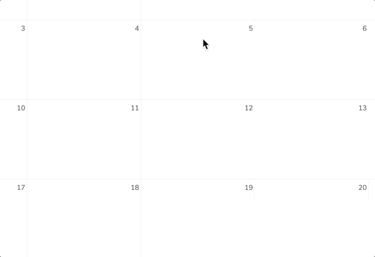

L’applicazione del calendario non è abilitata in modo predefinito e deve essere installata separatamente dal nostro App Store. Richiedilo al tuo amministratore.
L’applicazione Calendario di Nextcloud funziona in modo simile ad altre applicazioni di calendario con cui puoi sincronizzare i tuoi calendari ed eventi di Nextcloud.
Quando accedi all’applicazione Calendario per la prima volta, un primo calendario predefinito sarà pre-generato per te.
Se pianifichi di impostare un nuovo calendario senza trasferire nessuna vecchia informazione dal tuo calendario precedente, la creazione di un nuovo calendario è il modo in cui dovresti procedere.
Fai clic su +Nuovocalendario nella barra laterale sinistra.
Digita un nome per il tuo nuovo calendario, ad esempio «Lavoro», «Casa» o «Studi».
Dopo aver fatto clic sulla spunta, il tuo nuovo calendario viene creato e può essere sincronizzato tra i tuoi dispositivi, riempito con nuovi eventi e condiviso con i tuoi amici e colleghi.
A volte potresti voler cambiare il colore o l’intero nome di un calendario che hai precedentemente importato o creato. Potresti anche volerlo esportare nel tuo disco fisso locale o eliminarlo per sempre.
Nota
Tieni presente che eliminare un calendario è un’azione irreversibile. Dopo l’eliminazione, non c’è modo di ripristinare il calendario a meno che tu non abbia un backup locale.
Fai clic sul menu a tre puntini del rispettivo calendario.
Tieni presente che eliminare un calendario è un’azione irreversibile. Dopo l’eliminazione, non c’è modo di ripristinare il calendario a meno che tu non abbia un backup locale.
Puoi condividere il tuo calendario con altri utenti o gruppi. I calendari possono essere condivisi con privilegi di scrittura o di sola lettura. Quando condividi un calendario con accesso in scrittura, gli utenti con cui il calendario è condiviso potranno creare nuovi eventi nel calendario oltre che modificare ed eliminare quelli esistenti.
Nota
Le condivisioni del calendario attualmente non possono essere accettate o rifiutate. Se vuoi smettere di avere un calendario che qualcuno ha condiviso con te, puoi fare clic sul menu a 3 puntini vicino al calendario nella lista dei calendari e fare clic su «Annulla la condivisione con me».
I calendari possono essere pubblicati tramite un collegamento pubblico per renderli visibili (sola-lettura) agli utenti esterni. Puoi creare un collegamento pubblico aprendo il menu di condivisione per un calendario e facendo clic su « + » affianco a « Collegamento di condivisione ». Una volta creato puoi copiare il collegamento pubblico nei tuoi appunti o inviarlo tramite email.
C’è anche un « codice di incorporamento » che fornisce un iframe HTML per incorporare il tuo calendario nelle pagine pubbliche.
Multiple calendars can be shared together by adding their unique tokens to the end of an embed link. Individual tokens can be found at the end of each calendar’s public link. The full address will look like
https://cloud.example.com/index.php/apps/calendar/embed/<token1>-<token2>-<token3>
To change the default view or date of an embedded calendar, you need to provide an url that look like https://cloud.example.com/index.php/apps/calendar/embed/<token>/<view>/<date>.
In this url you need to replace the following variables:
<token> with the calendar’s token.
<view> with one of month, week, day, listMonth, listWeek, listDay. The default view is month and the normally used list is listMonth.
<date> with now or any date with the following format <year>-<month>-<day> (e.g. 2019-12-28).
Nella pagina pubblica, gli utenti possono avere il collegamento di sottoscrizione per il calendario e scaricare direttamente l’intero calendario.
Puoi sottoscrivere i calendari iCal direttamente all’interno del tuo Nextcloud. Supportando questo standard interoperabile (RFC 5545) abbiamo reso il calendario di Nextcloud compatibile con Google Calendar, Apple iCloud e molti altri server di calendari con cui puoi scambiare i tuoi calendari, inclusi i collegamenti di sottoscrizione dai calendari pubblicati su altre istanze Nextcloud, come descritto sopra.
Fai clic su +Nuovasottoscrizione nella barra laterale sinistra.
Digita o incolla il collegamento del calendario condiviso che vuoi sottoscrivere.
Finito. Le tue sottoscrizioni ai calendari saranno aggiornate regolarmente.
Nota
Le sottoscrizioni sono aggiornate ogni settimana, in modo predefinito. Il tuo amministratore potrebbe aver modificato questa impostazione.
Gli eventi possono essere creati facendo clic nell’area in cui l’evento è previsto. Nella vista giornaliera e settimanale del calendario è sufficiente fare clic, trascinare e lasciare il tuo cursore nell’area in cui l’evento si terrà.
La vista mensile richiede solo un singolo clic nell’area del giorno specifico.

After that, you can type in the event’s name (e.g. Meeting with Lukas), choose
the calendar in which you want to choose the event (e.g. Personal, Work),
check and concretize the time span or set the event as all-day event.
Se vuoi modificare dettagli avanzati come la Posizione, una Descrizione, i Partecipanti, un Promemoria o impostare l’evento come un evento ricorrente, fai clic sul pulsante Altro... per aprire l’editor avanzato della barra laterale.
Nota
Se vuoi sempre aprire l’editor avanzato della barra laterale invece che il semplice editor a comparsa degli eventi, puoi impostare un Saltaeditorsemplicedeglieventi con una spunta nella sezione Impostazionieimportazione dell’applicazione.
Il clic sul pulsante blu Crea creerà alla fine l’evento.
If you want to edit or delete a specific event, you just need to click on it.
After that you will be able to re-set all event details and open the
advanced sidebar-editor by clicking on More.
Il clic sul pulsante Aggiorna aggiornerà l’evento. Per annullare le tue modifiche, fai clic sull’icona Chiudi in alto a destra dell’elemento a comparsa o dell’editor della barra laterale.
Se apri la vista della barra laterale e fai clic sui menu a tre puntini affianco al nome dell’evento, hai un’opzione per esportare l’evento come un file .ics o rimuovere l’evento dal tuo calendario.
Puoi aggiungere partecipanti a un evento per far sapere a loro che sono invitati. Riceveranno una email di conferma e saranno in grado di confermare o declinare la loro partecipazione nell’evento. I partecipanti possono essere altri utenti nelle tue istanze Nextcloud, contatti nelle tue rubriche e indirizzi email diretti. Puoi anche cambiare il livello di partecipazione per partecipante, o disabilitare la conferma email per un partecipante specifico.
Suggerimento
Quando aggiungi altri utenti Nextcloud come partecipanti a un evento, puoi accedere alle loro informazioni FreeBusy se sono disponibili, aiutandoti a determinare quando è la migliore fascia oraria per il tuo evento.
Attenzione
Solo il proprietario del calendario può inviare gli inviti, coloro con cui è stato condiviso il calendario non sono in grado di farlo, che abbiano accesso in scrittura agli eventi del calendario o meno.
Puoi impostare i promemoria per essere notificato prima che si svolga un evento. Attualmente i metodi di notifica supportati sono :
Notifiche email
Notifiche Nextcloud
Puoi impostare i promemoria in un orario relativo all’evento o in una data specifica.
Nota
Solo il proprietario del calendario e le persone o i gruppi con cui il calendario è stato condiviso con accesso in scrittura riceveranno le notifiche. Se non ricevi alcuna notifica, ma pensi che dovresti, il tuo amministratore potrebbe aver disabilitato la funzionalità per il tuo server.
Nota
Se sincronizzi il tuo calendario con dispositivi mobili o altri client di terze parti, le notifiche potrebbe comparire anche là.
Un evento può essere impostato come «ricorrente», in modo che possa accadere ogni giorno, settimana, mese o anno. Regole specifiche possono essere aggiunte per impostare il giorno della settimana in cui capita l’evento o regole più complesse, come ogni quarto mercoledì di ogni mese.
Il calendario dei compleanni è un calendario generato automaticamente che recupera i compleanni dai tuoi contatti. L’unico modo per modificare questo calendario è compilare i tuoi contatti con le date di compleanno. Non puoi modificare direttamente questo calendario dall’applicazione del calendario.
Nota
Se non vedi il calendario dei compleanni, il tuo amministratore potrebbe averlo disabilitato per il tuo server.


{kind=link}